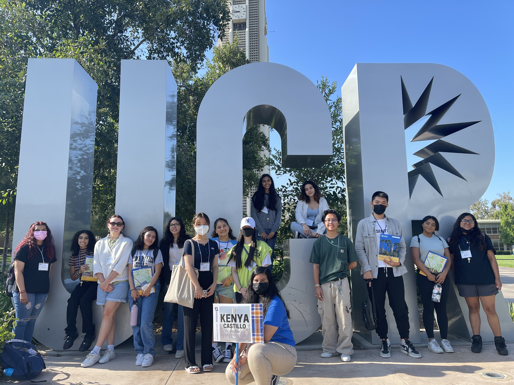
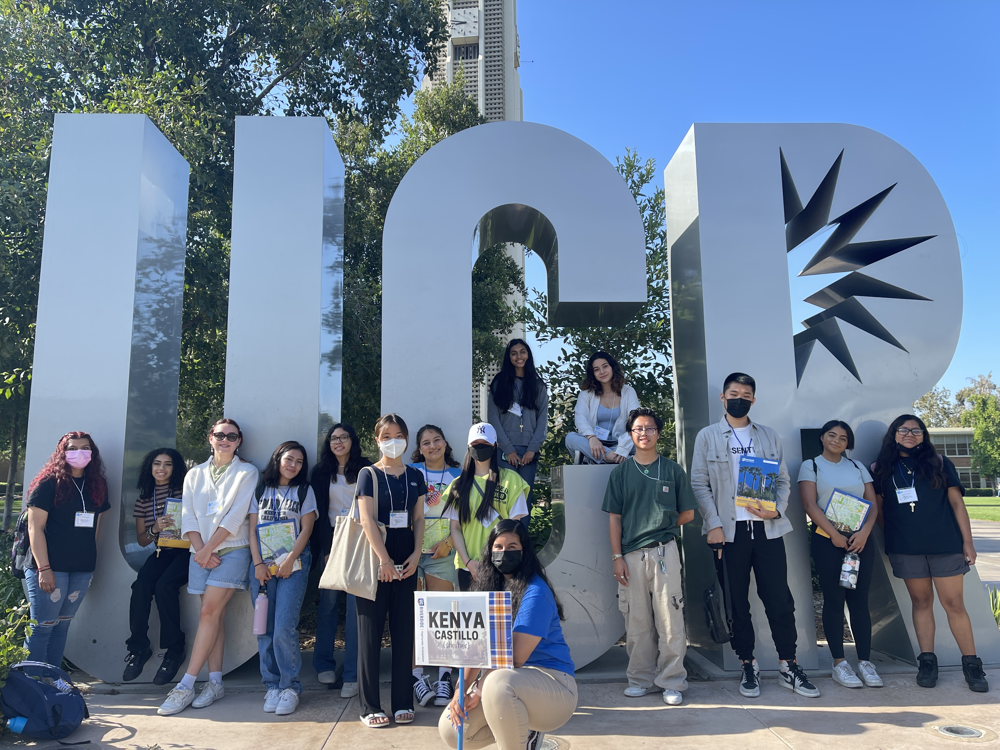
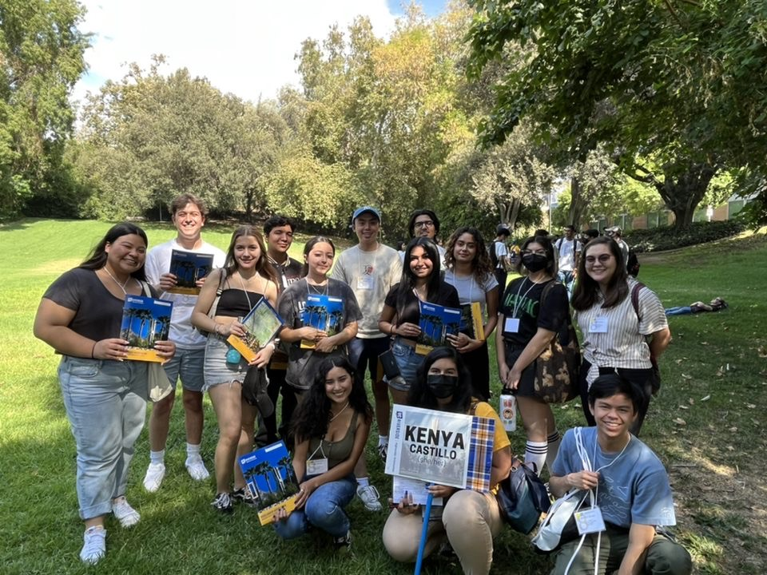
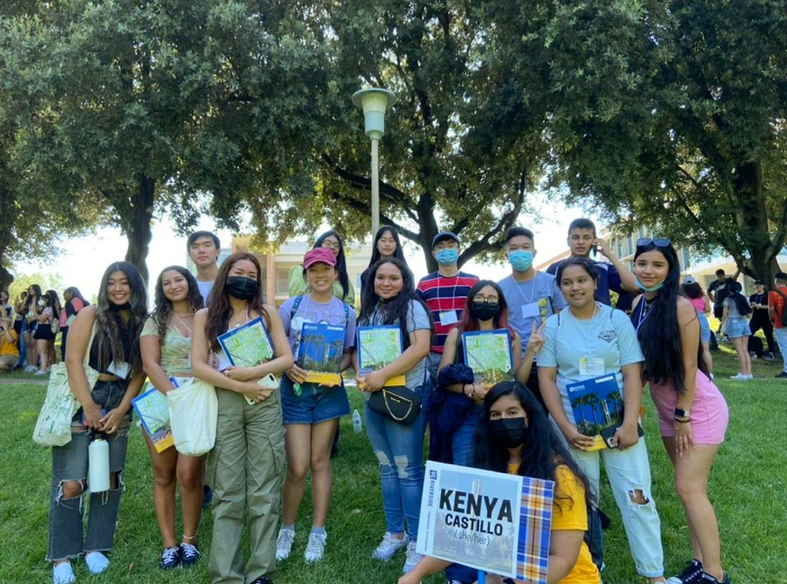
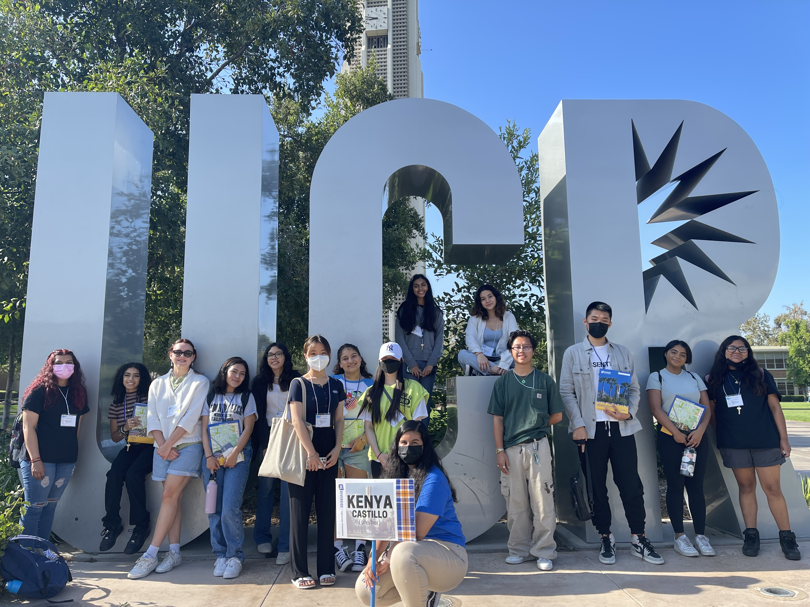
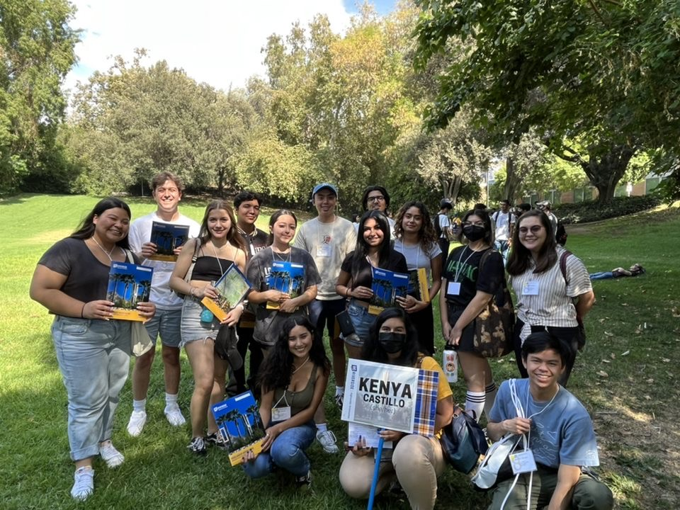
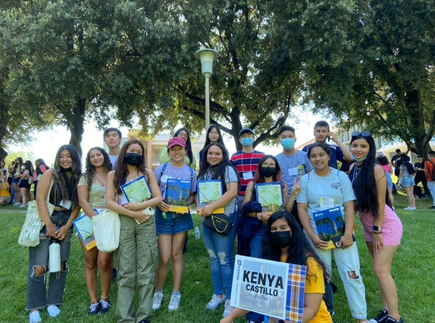

Kenya Castillo
Hi, I'm Kenya! I grew up in Rancho Cucamonga, CA, but I've had the opportunity to live in Mexico and in Chicago, Illinois. I'm currently a third year Biology major at the University of California, Riverside. With my Bachelor's of Science in Biology, I plan to attend medical school and achieve my goal of becoming a pediatrician with a speciality in children with disabilities.
My passion for medicine and my desire to get one-on-one patient interaction has led me to be a part of the COPE Health Scholar Program as a Health Scholar at the Riverside Community Hospital (RCH) site. Through this program, I have not only helped with improving patient satisfaction, but I have also had the privilege to learn and hear stories from patients that have impacted me in a way that made me look at life in a different perspective. Furthermore, my love for this program has lead me to become an ambassador, where I had the opportunity to interview incoming health scholars, as well the opportunity to help teach them patient skills, such as discharging a patient, during Training Day 1. During Training Day 2, I was a facilitator, where I observed the health scholars as they complete an assigned skill for their practical exam.
During the summer of 2022, I was an orientation leader, where I lead 12-17 students around campus teaching them about what it means to be a UCR student and our campus values and traditions. Previously, I was a Link Crew Leader at my high school, so my experience and my ability to help my students succeed as they transition from middle school to high school encouraged me to do the same in college. I enjoyed helping many incoming college students and family members with their questions and concerns. Through this experience I was able to improve my public speaking skills and teamwork skills since a majority part of the program revolves around working in a team and relying on each other to make the program be successful.
Experience
COPE Health Scholar
• Completed intensive training U.S. healthcare system, clinical best practices and practical hands-on patient care.
• Assist with patient care tasks such as bathing, feeding, changing, ambulating, checking vitals under the supervision of a licensed staff member.
• Interact with patients professionally using AIDET communication framework.
• 30 hours training, over 350 hours of clinical experience.
First-Year Mentor
• Encouraged students to be involved in campus life through workshops, events, and organizations to expand their networking and social life.
• Guided mentees throughout campus and helped develop time management skills for long-term success.
• Communicated and advised multiple students to resources on campus to help them transition and adjust to campus.
• Established trust through encouragement to self-express while maintaining confidentiality as a mandated reporter.
• Addressed student concerns and familiarized them with the support structures in place to help them.
• Assist students with fostering a work life balance to have a healthy relationship with themselves.
Highlander Orientation Leader
• Served as an Orientation Leader for ten Student Orientation Sessions, assisted over 6000 students and provided resources to 2500 family members.
• Facilitated interactive activities and discussions for groups of approximately 17 students, and guided groups of approximately 18 family members throughout Orientation.
• Taught students campus traditions, what it means to be a student at UCR (a Highlander) and how to embrace the four pillars of Tartan Soul: Accountability, Excellence, Integrity, and Respect; exemplified these principles in interactions with students, family members and other UCR staff.
• Served as a campus leader and role model throughout the program when interacting with students, family members, staff and faculty.
• Completed over 90 hours of staff training on skills and duties necessary to perform the functions of an Orientation Leader, program components, small and large group facilitation, etc., and additional staff meetings.
• Provided translation services.
Education
UC Riverside
Portfolio
 



 